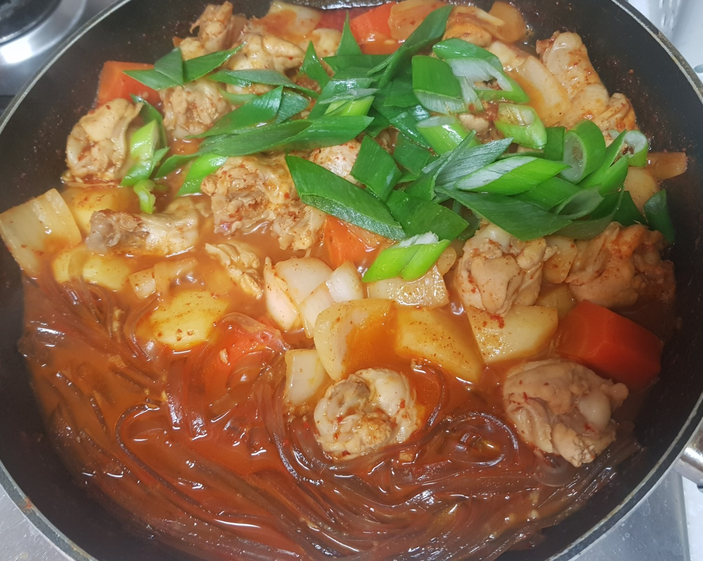

닭볶음탕

- 재료
닭볶음탕용 닭 1마리, 당근 1/3개, 양파 1/2개, 감자 3개, 대파 1개, 고추장 2T, 고춧가루 4T
설탕 2T, 국간장 5T, 다진마늘 1T, 물 800ml, 미림, 당면 한 줌(납작당면 추천)
- 조리순서
- 당근과 감자는 껍질을 벗기고 씻은 후 큼직하게 깍뚝 썰어줍니다.
양파는 네모나게 썰고, 파는 어슷 썰어줍니다.
- 닭은 우유에 10분간 담아놓고 잡내를 제거합니다.
당면은 찬물에 30분간 불려줍니다.
- 고추장 2T, 고춧가루 4T, 설탕 2T, 국간장 5T, 다진마늘 1T, 물 3T 잘 섞어서 양념을 만듭니다.
시간이 지나면 닭을 꺼내서 잘 헹궈줍니다.
- 끓는 물에 미림을 넣고 5분간 닭을 데친 후 씻어냅니다.
깊은 팬에 데친 닭, 당근, 감자, 양념장, 물 800ml를 넣고 센불로 끓입니다.
- 팔팔 끓으면 양념을 잘 섞고 중불로 익힙니다. 30분 정도 끓여줍니다.
젓가락으로 찔러서 닭, 당근, 감자가 익었는지 확인합니다. 익을 때까지 기다려주세요.
- 졸여지면 양파와 당면을 넣고 5분 끓입니다. 마지막으로 대파를 넣고 불을 끕니다. 완성!